Example: Plaque psoriasis HTA report
Source:vignettes/example_hta_psoriasis.Rmd
example_hta_psoriasis.Rmd
library(multinma)
options(mc.cores = parallel::detectCores())#> For execution on a local, multicore CPU with excess RAM we recommend calling
#> options(mc.cores = parallel::detectCores())
#>
#> Attaching package: 'multinma'
#> The following objects are masked from 'package:stats':
#>
#> dgamma, pgamma, qgammaThis vignette describes the analysis of treatments for
moderate-to-severe plaque psoriasis from an HTA report (Woolacott et al.
2006), replicating the analysis in NICE Technical Support
Document 2 (Dias et al.
2011). The data are available in this package as
hta_psoriasis:
head(hta_psoriasis)
#> studyn studyc year trtn trtc sample_size PASI50 PASI75 PASI90
#> 1 1 Elewski 2004 1 Supportive care 193 12 5 1
#> 2 1 Elewski 2004 2 Etanercept 25 mg 196 59 46 21
#> 3 1 Elewski 2004 3 Etanercept 50 mg 194 54 56 40
#> 4 2 Gottlieb 2003 1 Supportive care 55 5 1 0
#> 5 2 Gottlieb 2003 2 Etanercept 25 mg 57 23 11 6
#> 6 3 Lebwohl 2003 1 Supportive care 122 13 5 1Outcomes are ordered multinomial success/failure to achieve 50%, 75%, or 90% reduction in symptoms on the Psoriasis Area and Severity Index (PASI) scale. Some studies report ordered outcomes at all three cutpoints, others only one or two:
dplyr::filter(hta_psoriasis, studyc %in% c("Elewski", "Gordon", "ACD2058g", "Altmeyer"))
#> studyn studyc year trtn trtc sample_size PASI50 PASI75 PASI90
#> 1 1 Elewski 2004 1 Supportive care 193 12 5 1
#> 2 1 Elewski 2004 2 Etanercept 25 mg 196 59 46 21
#> 3 1 Elewski 2004 3 Etanercept 50 mg 194 54 56 40
#> 4 5 Gordon 2003 1 Supportive care 187 18 8 NA
#> 5 5 Gordon 2003 4 Efalizumab 369 118 98 NA
#> 6 6 ACD2058g 2004 1 Supportive care 170 25 NA NA
#> 7 6 ACD2058g 2004 4 Efalizumab 162 99 NA NA
#> 8 10 Altmeyer 1994 1 Supportive care 51 NA 1 NA
#> 9 10 Altmeyer 1994 6 Fumaderm 49 NA 12 NAHere, the outcome counts are given as “exclusive” counts. That is, for a study reporting all outcomes (e.g. Elewski), the counts represent the categories 50 < PASI < 75, 75 < PASI < 90, and 90 < PASI < 100, and the corresponding columns are named by the lower end of the interval. Missing values are used where studies only report a subset of the outcomes. For a study reporting only two outcomes, say PASI50 and PASI75 as in Gordon, the counts represent the categories 50 < PASI < 75 and 75 < PASI < 100. For a study reporting only one outcome, say PASI70 as in Altmeyer, the count represents 70 < PASI < 100. We also need the count for the lowest category (i.e. no higher outcomes achieved), which is equal to the sample size minus the counts in the other observed categories.
Setting up the network
We begin by setting up the network. We have arm-level ordered
multinomial count data, so we use the function
set_agd_arm(). The function multi() helps us
to specify the ordered outcomes correctly.
pso_net <- set_agd_arm(hta_psoriasis,
study = paste(studyc, year),
trt = trtc,
r = multi(r0 = sample_size - rowSums(cbind(PASI50, PASI75, PASI90), na.rm = TRUE),
PASI50, PASI75, PASI90,
inclusive = FALSE,
type = "ordered"))
pso_net
#> A network with 16 AgD studies (arm-based).
#>
#> ------------------------------------------------------- AgD studies (arm-based) ----
#> Study Treatment arms
#> ACD2058g 2004 2: Supportive care | Efalizumab
#> ACD2600g 2004 2: Supportive care | Efalizumab
#> Altmeyer 1994 2: Supportive care | Fumaderm
#> Chaudari 2001 2: Supportive care | Infliximab
#> Elewski 2004 3: Supportive care | Etanercept 25 mg | Etanercept 50 mg
#> Ellis 1991 3: Supportive care | Ciclosporin | Ciclosporin
#> Gordon 2003 2: Supportive care | Efalizumab
#> Gottlieb 2003 2: Supportive care | Etanercept 25 mg
#> Gottlieb 2004 3: Supportive care | Infliximab | Infliximab
#> Guenther 1991 2: Supportive care | Ciclosporin
#> ... plus 6 more studies
#>
#> Outcome type: ordered (4 categories)
#> ------------------------------------------------------------------------------------
#> Total number of treatments: 8
#> Total number of studies: 16
#> Reference treatment is: Supportive care
#> Network is connectedPlot the network structure.
plot(pso_net, weight_edges = TRUE, weight_nodes = TRUE) +
# Nudge the legend over
ggplot2::theme(legend.box.spacing = ggplot2::unit(0.75, "in"),
plot.margin = ggplot2::margin(0.1, 0, 0.1, 0.75, "in"))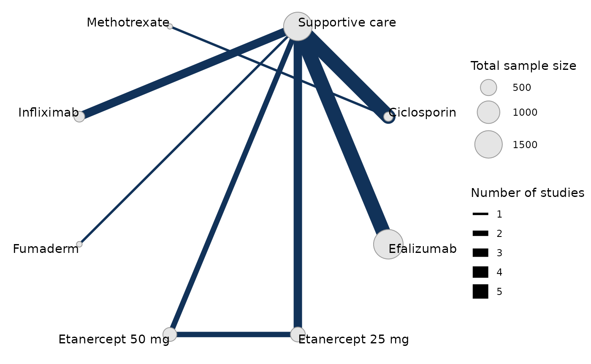
Meta-analysis models
We fit both fixed effect (FE) and random effects (RE) models.
Fixed effect meta-analysis
First, we fit a fixed effect model using the nma()
function with trt_effects = "fixed", using a probit link
function link = "probit". We use
prior distributions for the treatment effects
,
and
prior distributions for the study-specific intercepts
.
We can examine the range of parameter values implied by these prior
distributions with the summary() method:
summary(normal(scale = 10))
#> A Normal prior distribution: location = 0, scale = 10.
#> 50% of the prior density lies between -6.74 and 6.74.
#> 95% of the prior density lies between -19.6 and 19.6.
summary(normal(scale = 100))
#> A Normal prior distribution: location = 0, scale = 100.
#> 50% of the prior density lies between -67.45 and 67.45.
#> 95% of the prior density lies between -196 and 196.We also need to specify prior distributions for the latent cutpoints
and
on the underlying scale - here the PASI standardised mean difference due
to the probit link (the cutpoint
).
To make these easier to reason about, we actually specify priors on the
differences between adjacent cutpoints,
e.g.
and
.
These can be given any positive-valued prior distribution, and Stan will
automatically impose the necessary ordering constraints behind the
scenes. We choose to give these implicit flat priors
flat().
The model is fitted using the nma() function.
pso_fit_FE <- nma(pso_net,
trt_effects = "fixed",
link = "probit",
prior_intercept = normal(scale = 100),
prior_trt = normal(scale = 10),
prior_aux = flat())
#> Note: Setting "Supportive care" as the network reference treatment.Basic parameter summaries are given by the print()
method:
pso_fit_FE
#> A fixed effects NMA with a ordered likelihood (probit link).
#> Inference for Stan model: ordered_multinomial.
#> 4 chains, each with iter=2000; warmup=1000; thin=1;
#> post-warmup draws per chain=1000, total post-warmup draws=4000.
#>
#> mean se_mean sd 2.5% 25% 50% 75% 97.5% n_eff
#> d[Ciclosporin] 1.92 0.01 0.33 1.31 1.68 1.91 2.14 2.61 1525
#> d[Efalizumab] 1.19 0.00 0.06 1.07 1.15 1.19 1.23 1.30 1886
#> d[Etanercept 25 mg] 1.51 0.00 0.10 1.32 1.45 1.51 1.58 1.70 2002
#> d[Etanercept 50 mg] 1.92 0.00 0.10 1.72 1.85 1.92 1.99 2.11 2100
#> d[Fumaderm] 1.48 0.01 0.48 0.63 1.14 1.44 1.78 2.49 2793
#> d[Infliximab] 2.33 0.01 0.27 1.84 2.14 2.32 2.50 2.88 2568
#> d[Methotrexate] 1.62 0.01 0.44 0.77 1.33 1.61 1.91 2.49 1833
#> lp__ -3405.05 0.09 3.52 -3412.77 -3407.19 -3404.72 -3402.54 -3399.05 1610
#> cc[PASI50] 0.00 NaN 0.00 0.00 0.00 0.00 0.00 0.00 NaN
#> cc[PASI75] 0.76 0.00 0.03 0.70 0.74 0.76 0.78 0.82 5083
#> cc[PASI90] 1.56 0.00 0.05 1.46 1.53 1.56 1.60 1.67 5920
#> Rhat
#> d[Ciclosporin] 1
#> d[Efalizumab] 1
#> d[Etanercept 25 mg] 1
#> d[Etanercept 50 mg] 1
#> d[Fumaderm] 1
#> d[Infliximab] 1
#> d[Methotrexate] 1
#> lp__ 1
#> cc[PASI50] NaN
#> cc[PASI75] 1
#> cc[PASI90] 1
#>
#> Samples were drawn using NUTS(diag_e) at Thu Sep 19 22:15:37 2024.
#> For each parameter, n_eff is a crude measure of effective sample size,
#> and Rhat is the potential scale reduction factor on split chains (at
#> convergence, Rhat=1).Note: the treatment effects are the opposite sign to those in TSD 2 (Dias et al. 2011). This is because we parameterise the linear predictor as , rather than . The interpretation here thus follows that of a standard binomial probit (or logit) regression; SMDs (or log ORs) greater than zero mean that the treatment increases the probability of an event compared to the comparator (and less than zero mean a reduction in probability). Here higher outcomes are positive, and all of the active treatments are estimated to increase the response (i.e. a greater reduction) on the PASI scale compared to the network reference (supportive care).
By default, summaries of the study-specific intercepts
are hidden, but could be examined by changing the pars
argument:
The prior and posterior distributions can be compared visually using
the plot_prior_posterior() function:
plot_prior_posterior(pso_fit_FE)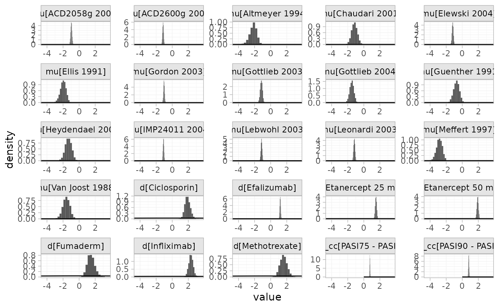
Focusing specifically on the cutpoints we see that these are highly identified by the data, which is why the implicit flat priors work for these parameters.
plot_prior_posterior(pso_fit_FE, prior = "aux")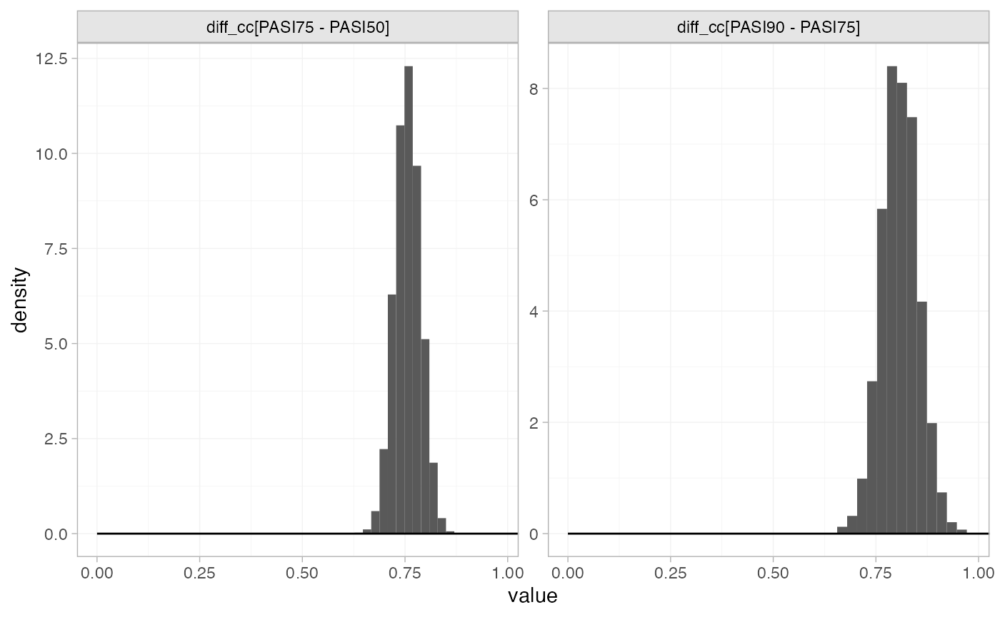
Random effects meta-analysis
We now fit a random effects model using the nma()
function with trt_effects = "random". Again, we use
prior distributions for the treatment effects
,
prior distributions for the study-specific intercepts
,
implicit flat prior distributions for the latent cutpoints, and we
additionally use a
prior for the heterogeneity standard deviation
.
We can examine the range of parameter values implied by these prior
distributions with the summary() method:
summary(normal(scale = 10))
#> A Normal prior distribution: location = 0, scale = 10.
#> 50% of the prior density lies between -6.74 and 6.74.
#> 95% of the prior density lies between -19.6 and 19.6.
summary(normal(scale = 100))
#> A Normal prior distribution: location = 0, scale = 100.
#> 50% of the prior density lies between -67.45 and 67.45.
#> 95% of the prior density lies between -196 and 196.
summary(half_normal(scale = 2.5))
#> A half-Normal prior distribution: location = 0, scale = 2.5.
#> 50% of the prior density lies between 0 and 1.69.
#> 95% of the prior density lies between 0 and 4.9.Fitting the RE model
pso_fit_RE <- nma(pso_net,
trt_effects = "random",
link = "probit",
prior_intercept = normal(scale = 100),
prior_trt = normal(scale = 10),
prior_aux = flat(),
prior_het = half_normal(scale = 2.5),
adapt_delta = 0.99)#> Note: Setting "Supportive care" as the network reference treatment.Basic parameter summaries are given by the print()
method:
pso_fit_RE
#> A random effects NMA with a ordered likelihood (probit link).
#> Inference for Stan model: ordered_multinomial.
#> 4 chains, each with iter=5000; warmup=2500; thin=1;
#> post-warmup draws per chain=2500, total post-warmup draws=10000.
#>
#> mean se_mean sd 2.5% 25% 50% 75% 97.5% n_eff
#> d[Ciclosporin] 2.02 0.01 0.42 1.30 1.73 1.99 2.27 2.95 3445
#> d[Efalizumab] 1.18 0.00 0.18 0.82 1.10 1.19 1.27 1.55 4612
#> d[Etanercept 25 mg] 1.53 0.00 0.25 1.02 1.40 1.52 1.65 2.05 4159
#> d[Etanercept 50 mg] 1.93 0.00 0.27 1.35 1.80 1.93 2.06 2.51 4818
#> d[Fumaderm] 1.48 0.01 0.63 0.27 1.08 1.45 1.88 2.77 7699
#> d[Infliximab] 2.31 0.00 0.38 1.55 2.08 2.31 2.55 3.07 8199
#> d[Methotrexate] 1.70 0.01 0.62 0.54 1.30 1.67 2.07 3.00 4511
#> lp__ -3410.46 0.18 6.82 -3424.39 -3414.96 -3410.32 -3405.69 -3397.77 1372
#> tau 0.31 0.01 0.22 0.02 0.15 0.27 0.43 0.85 947
#> cc[PASI50] 0.00 NaN 0.00 0.00 0.00 0.00 0.00 0.00 NaN
#> cc[PASI75] 0.76 0.00 0.03 0.70 0.73 0.76 0.78 0.82 14642
#> cc[PASI90] 1.56 0.00 0.05 1.46 1.53 1.56 1.60 1.66 16421
#> Rhat
#> d[Ciclosporin] 1.00
#> d[Efalizumab] 1.00
#> d[Etanercept 25 mg] 1.00
#> d[Etanercept 50 mg] 1.00
#> d[Fumaderm] 1.00
#> d[Infliximab] 1.00
#> d[Methotrexate] 1.00
#> lp__ 1.00
#> tau 1.01
#> cc[PASI50] NaN
#> cc[PASI75] 1.00
#> cc[PASI90] 1.00
#>
#> Samples were drawn using NUTS(diag_e) at Thu Sep 19 22:16:25 2024.
#> For each parameter, n_eff is a crude measure of effective sample size,
#> and Rhat is the potential scale reduction factor on split chains (at
#> convergence, Rhat=1).By default, summaries of the study-specific intercepts
and study-specific relative effects
are hidden, but could be examined by changing the pars
argument:
The prior and posterior distributions can be compared visually using
the plot_prior_posterior() function:
plot_prior_posterior(pso_fit_RE, prior = c("trt", "aux", "het"))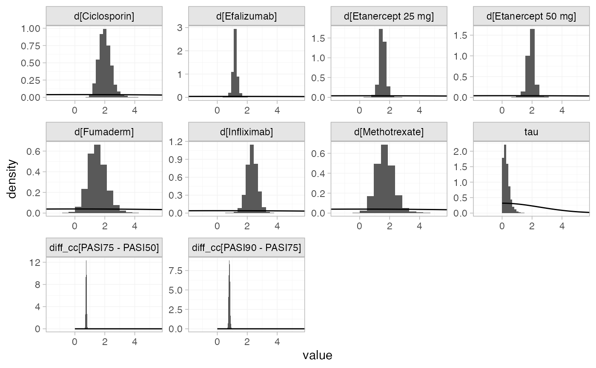
Model comparison
Model fit can be checked using the dic() function:
(dic_FE <- dic(pso_fit_FE))
#> Residual deviance: 74.7 (on 58 data points)
#> pD: 25.2
#> DIC: 100
(dic_RE <- dic(pso_fit_RE))
#> Residual deviance: 62.6 (on 58 data points)
#> pD: 33.3
#> DIC: 95.9The random effects model has a lower DIC and the residual deviance is closer to the number of data points, so is preferred in this case.
We can also examine the residual deviance contributions with the
corresponding plot() method.
plot(dic_FE)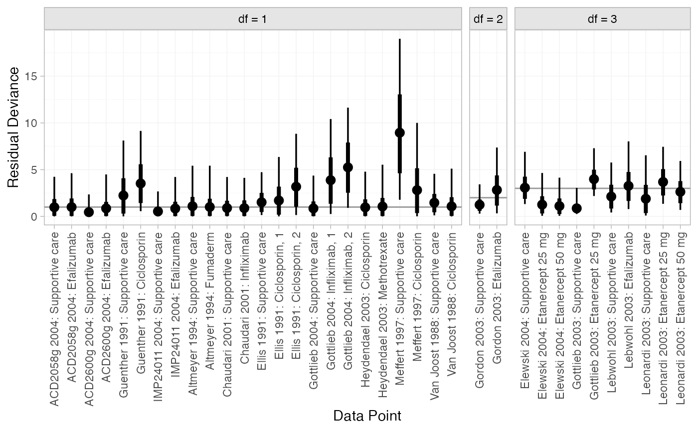
plot(dic_RE)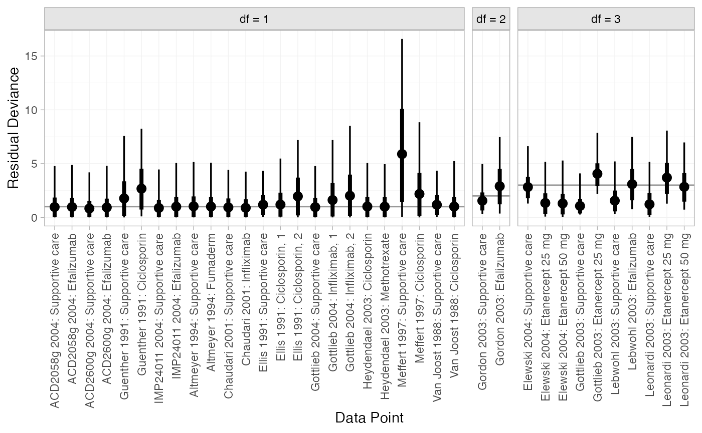
Most data points are fit well, with posterior mean residual deviances close to the degrees of freedom. The Meffert 1997 study has a substantially higher residual deviance contribution, which could be investigated further to see why this study appears to be an outlier.
Further results
Predicted probabilities of response
Dias et al. (2011) produce absolute predictions of
probability of achieving responses at each PASI cutoff, assuming a
Normal distribution for the baseline probit probability of PASI50
response on supportive care with mean
and precision
.
We can replicate these results using the predict() method.
The baseline argument takes a distr()
distribution object, with which we specify the corresponding Normal
distribution. We set type = "response" to produce predicted
probabilities (type = "link" would produce predicted probit
probabilities).
pred_FE <- predict(pso_fit_FE,
baseline = distr(qnorm, mean = -1.097, sd = 123^-0.5),
type = "response")
pred_FE
#> mean sd 2.5% 25% 50% 75% 97.5% Bulk_ESS Tail_ESS Rhat
#> pred[Supportive care, PASI50] 0.14 0.02 0.10 0.12 0.14 0.15 0.18 3631 3432 1
#> pred[Supportive care, PASI75] 0.03 0.01 0.02 0.03 0.03 0.04 0.05 3724 3434 1
#> pred[Supportive care, PASI90] 0.00 0.00 0.00 0.00 0.00 0.00 0.01 4040 3841 1
#> pred[Ciclosporin, PASI50] 0.78 0.10 0.57 0.72 0.79 0.85 0.94 1633 2194 1
#> pred[Ciclosporin, PASI75] 0.52 0.13 0.28 0.43 0.52 0.61 0.78 1616 2120 1
#> pred[Ciclosporin, PASI90] 0.24 0.11 0.08 0.16 0.23 0.30 0.49 1646 2169 1
#> pred[Efalizumab, PASI50] 0.54 0.04 0.45 0.51 0.54 0.57 0.62 2866 3591 1
#> pred[Efalizumab, PASI75] 0.25 0.03 0.19 0.23 0.25 0.28 0.33 2948 3178 1
#> pred[Efalizumab, PASI90] 0.07 0.02 0.05 0.06 0.07 0.08 0.11 3189 3694 1
#> pred[Etanercept 25 mg, PASI50] 0.66 0.05 0.56 0.63 0.66 0.69 0.75 2515 3271 1
#> pred[Etanercept 25 mg, PASI75] 0.37 0.05 0.27 0.33 0.37 0.40 0.47 2600 3535 1
#> pred[Etanercept 25 mg, PASI90] 0.13 0.03 0.08 0.11 0.12 0.14 0.19 2802 3523 1
#> pred[Etanercept 50 mg, PASI50] 0.79 0.04 0.71 0.77 0.79 0.82 0.86 2596 3315 1
#> pred[Etanercept 50 mg, PASI75] 0.53 0.05 0.42 0.49 0.53 0.56 0.63 2689 3381 1
#> pred[Etanercept 50 mg, PASI90] 0.23 0.04 0.16 0.20 0.23 0.26 0.32 2813 3509 1
#> pred[Fumaderm, PASI50] 0.63 0.16 0.32 0.51 0.63 0.76 0.92 3142 2210 1
#> pred[Fumaderm, PASI75] 0.37 0.17 0.11 0.23 0.34 0.47 0.75 3086 2160 1
#> pred[Fumaderm, PASI90] 0.14 0.11 0.02 0.06 0.11 0.19 0.44 3055 2146 1
#> pred[Infliximab, PASI50] 0.88 0.05 0.76 0.85 0.89 0.92 0.97 2858 2694 1
#> pred[Infliximab, PASI75] 0.68 0.10 0.47 0.61 0.68 0.74 0.86 2832 2656 1
#> pred[Infliximab, PASI90] 0.37 0.10 0.19 0.30 0.37 0.44 0.60 2893 2673 1
#> pred[Methotrexate, PASI50] 0.68 0.14 0.37 0.59 0.70 0.79 0.92 1917 2382 1
#> pred[Methotrexate, PASI75] 0.42 0.16 0.14 0.30 0.41 0.52 0.74 1893 2389 1
#> pred[Methotrexate, PASI90] 0.17 0.11 0.03 0.09 0.15 0.23 0.43 1923 2344 1
plot(pred_FE)
pred_RE <- predict(pso_fit_RE,
baseline = distr(qnorm, mean = -1.097, sd = 123^-0.5),
type = "response")
pred_RE
#> mean sd 2.5% 25% 50% 75% 97.5% Bulk_ESS Tail_ESS Rhat
#> pred[Supportive care, PASI50] 0.14 0.02 0.10 0.12 0.14 0.15 0.18 9886 9993 1
#> pred[Supportive care, PASI75] 0.03 0.01 0.02 0.03 0.03 0.04 0.05 10214 9804 1
#> pred[Supportive care, PASI90] 0.00 0.00 0.00 0.00 0.00 0.00 0.01 11067 9195 1
#> pred[Ciclosporin, PASI50] 0.80 0.11 0.57 0.74 0.81 0.88 0.97 3818 3904 1
#> pred[Ciclosporin, PASI75] 0.56 0.15 0.28 0.45 0.55 0.67 0.87 3797 3762 1
#> pred[Ciclosporin, PASI90] 0.28 0.14 0.08 0.17 0.25 0.35 0.62 3867 3836 1
#> pred[Efalizumab, PASI50] 0.53 0.08 0.37 0.49 0.53 0.58 0.69 5724 4943 1
#> pred[Efalizumab, PASI75] 0.26 0.06 0.14 0.22 0.25 0.29 0.40 5807 4872 1
#> pred[Efalizumab, PASI90] 0.07 0.03 0.03 0.06 0.07 0.09 0.14 5982 5094 1
#> pred[Etanercept 25 mg, PASI50] 0.66 0.09 0.46 0.61 0.66 0.72 0.84 5290 3843 1
#> pred[Etanercept 25 mg, PASI75] 0.38 0.10 0.20 0.32 0.37 0.43 0.59 5313 3915 1
#> pred[Etanercept 25 mg, PASI90] 0.14 0.06 0.05 0.10 0.13 0.16 0.28 5338 4164 1
#> pred[Etanercept 50 mg, PASI50] 0.79 0.08 0.59 0.75 0.80 0.84 0.92 5769 3818 1
#> pred[Etanercept 50 mg, PASI75] 0.53 0.11 0.30 0.47 0.53 0.59 0.75 5785 3895 1
#> pred[Etanercept 50 mg, PASI90] 0.24 0.09 0.09 0.19 0.23 0.28 0.45 5726 3792 1
#> pred[Fumaderm, PASI50] 0.63 0.20 0.20 0.49 0.64 0.78 0.96 7901 5277 1
#> pred[Fumaderm, PASI75] 0.37 0.20 0.05 0.22 0.34 0.51 0.83 7915 5162 1
#> pred[Fumaderm, PASI90] 0.16 0.15 0.01 0.06 0.11 0.22 0.56 7948 4788 1
#> pred[Infliximab, PASI50] 0.87 0.08 0.67 0.83 0.89 0.93 0.98 8322 5613 1
#> pred[Infliximab, PASI75] 0.67 0.13 0.37 0.58 0.67 0.76 0.89 8319 5479 1
#> pred[Infliximab, PASI90] 0.37 0.14 0.13 0.28 0.36 0.46 0.66 8370 5474 1
#> pred[Methotrexate, PASI50] 0.69 0.18 0.28 0.58 0.72 0.83 0.97 4706 4457 1
#> pred[Methotrexate, PASI75] 0.44 0.21 0.09 0.29 0.42 0.59 0.88 4700 4651 1
#> pred[Methotrexate, PASI90] 0.20 0.16 0.02 0.09 0.16 0.28 0.65 4746 4506 1
plot(pred_RE)If instead of information on the baseline PASI 50 response probit
probability we have PASI 50 event counts, we can use these to construct
a Beta distribution for the baseline probability of PASI 50 response.
For example, if 56 out of 408 individuals achieved PASI 50 response on
supportive care in the target population of interest, the appropriate
Beta distribution for the response probability would be
.
We can specify this Beta distribution for the baseline response using
the baseline_type = "reponse" argument (the default is
"link", used above for the baseline probit
probability).
pred_FE_beta <- predict(pso_fit_FE,
baseline = distr(qbeta, 56, 408-56),
baseline_type = "response",
type = "response")
pred_FE_beta
#> mean sd 2.5% 25% 50% 75% 97.5% Bulk_ESS Tail_ESS Rhat
#> pred[Supportive care, PASI50] 0.14 0.02 0.10 0.12 0.14 0.15 0.17 3940 4002 1
#> pred[Supportive care, PASI75] 0.03 0.01 0.02 0.03 0.03 0.04 0.05 4026 3931 1
#> pred[Supportive care, PASI90] 0.00 0.00 0.00 0.00 0.00 0.00 0.01 4614 4140 1
#> pred[Ciclosporin, PASI50] 0.78 0.09 0.58 0.72 0.79 0.85 0.94 1659 2017 1
#> pred[Ciclosporin, PASI75] 0.52 0.13 0.29 0.43 0.52 0.61 0.78 1636 1987 1
#> pred[Ciclosporin, PASI90] 0.24 0.11 0.08 0.16 0.23 0.30 0.49 1669 2093 1
#> pred[Efalizumab, PASI50] 0.54 0.04 0.46 0.51 0.54 0.56 0.61 3238 3759 1
#> pred[Efalizumab, PASI75] 0.25 0.03 0.19 0.23 0.25 0.28 0.32 3276 3480 1
#> pred[Efalizumab, PASI90] 0.07 0.02 0.05 0.06 0.07 0.08 0.10 3624 3838 1
#> pred[Etanercept 25 mg, PASI50] 0.66 0.05 0.56 0.63 0.66 0.69 0.74 2528 3368 1
#> pred[Etanercept 25 mg, PASI75] 0.37 0.05 0.28 0.34 0.37 0.40 0.46 2682 3458 1
#> pred[Etanercept 25 mg, PASI90] 0.13 0.03 0.08 0.11 0.13 0.14 0.19 3045 3396 1
#> pred[Etanercept 50 mg, PASI50] 0.79 0.04 0.71 0.77 0.79 0.82 0.86 2616 3614 1
#> pred[Etanercept 50 mg, PASI75] 0.53 0.05 0.42 0.49 0.53 0.56 0.62 2735 3551 1
#> pred[Etanercept 50 mg, PASI90] 0.23 0.04 0.16 0.20 0.23 0.26 0.32 2852 3278 1
#> pred[Fumaderm, PASI50] 0.63 0.16 0.32 0.51 0.63 0.75 0.92 3227 2153 1
#> pred[Fumaderm, PASI75] 0.36 0.17 0.11 0.23 0.34 0.47 0.75 3191 2153 1
#> pred[Fumaderm, PASI90] 0.14 0.11 0.02 0.06 0.11 0.19 0.44 3162 2112 1
#> pred[Infliximab, PASI50] 0.88 0.05 0.76 0.85 0.89 0.92 0.96 2662 2669 1
#> pred[Infliximab, PASI75] 0.68 0.10 0.48 0.61 0.68 0.74 0.85 2649 2702 1
#> pred[Infliximab, PASI90] 0.37 0.10 0.19 0.30 0.37 0.44 0.59 2721 2621 1
#> pred[Methotrexate, PASI50] 0.68 0.14 0.37 0.59 0.70 0.79 0.92 1918 2206 1
#> pred[Methotrexate, PASI75] 0.42 0.16 0.13 0.30 0.41 0.52 0.74 1896 2275 1
#> pred[Methotrexate, PASI90] 0.17 0.11 0.03 0.09 0.15 0.23 0.43 1924 2318 1
plot(pred_FE_beta)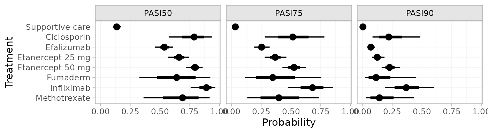
pred_RE_beta <- predict(pso_fit_RE,
baseline = distr(qbeta, 56, 408-56),
baseline_type = "response",
type = "response")
pred_RE_beta
#> mean sd 2.5% 25% 50% 75% 97.5% Bulk_ESS Tail_ESS Rhat
#> pred[Supportive care, PASI50] 0.14 0.02 0.11 0.13 0.14 0.15 0.17 9843 9606 1
#> pred[Supportive care, PASI75] 0.03 0.01 0.02 0.03 0.03 0.04 0.05 10312 10142 1
#> pred[Supportive care, PASI90] 0.00 0.00 0.00 0.00 0.00 0.00 0.01 11248 9733 1
#> pred[Ciclosporin, PASI50] 0.80 0.11 0.57 0.74 0.81 0.88 0.97 3949 3809 1
#> pred[Ciclosporin, PASI75] 0.56 0.15 0.28 0.45 0.55 0.66 0.87 3930 3807 1
#> pred[Ciclosporin, PASI90] 0.28 0.14 0.08 0.18 0.25 0.35 0.62 3994 3711 1
#> pred[Efalizumab, PASI50] 0.53 0.07 0.38 0.49 0.54 0.58 0.68 5268 4467 1
#> pred[Efalizumab, PASI75] 0.26 0.06 0.14 0.22 0.25 0.29 0.39 5309 4845 1
#> pred[Efalizumab, PASI90] 0.07 0.03 0.03 0.06 0.07 0.09 0.14 5412 4570 1
#> pred[Etanercept 25 mg, PASI50] 0.66 0.09 0.47 0.61 0.66 0.71 0.83 4862 4111 1
#> pred[Etanercept 25 mg, PASI75] 0.38 0.09 0.20 0.32 0.37 0.43 0.58 4872 3898 1
#> pred[Etanercept 25 mg, PASI90] 0.14 0.06 0.05 0.10 0.13 0.16 0.28 4890 4331 1
#> pred[Etanercept 50 mg, PASI50] 0.79 0.08 0.60 0.75 0.80 0.84 0.92 5452 3614 1
#> pred[Etanercept 50 mg, PASI75] 0.53 0.11 0.30 0.47 0.53 0.59 0.75 5441 3711 1
#> pred[Etanercept 50 mg, PASI90] 0.24 0.08 0.09 0.19 0.23 0.28 0.45 5403 3761 1
#> pred[Fumaderm, PASI50] 0.63 0.20 0.20 0.49 0.64 0.78 0.95 7940 5012 1
#> pred[Fumaderm, PASI75] 0.37 0.20 0.06 0.22 0.34 0.51 0.82 7954 5047 1
#> pred[Fumaderm, PASI90] 0.16 0.14 0.01 0.06 0.11 0.22 0.55 7995 4970 1
#> pred[Infliximab, PASI50] 0.87 0.08 0.67 0.83 0.89 0.93 0.98 8400 5360 1
#> pred[Infliximab, PASI75] 0.67 0.13 0.37 0.59 0.68 0.76 0.89 8396 5573 1
#> pred[Infliximab, PASI90] 0.37 0.14 0.13 0.28 0.36 0.46 0.66 8454 5928 1
#> pred[Methotrexate, PASI50] 0.69 0.18 0.29 0.58 0.72 0.84 0.97 4852 4451 1
#> pred[Methotrexate, PASI75] 0.44 0.21 0.09 0.29 0.43 0.59 0.88 4847 4407 1
#> pred[Methotrexate, PASI90] 0.20 0.16 0.02 0.09 0.16 0.28 0.64 4893 4362 1
plot(pred_RE_beta)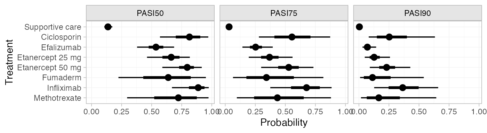 (Notice that these results are equivalent to those calculated above using the Normal distribution for the baseline probit probability, since these event counts correspond to the same probit probability.)
We can modify the plots using standard ggplot2
functions. For example, to plot the cutpoints together with a colour
coding (instead of split into facets):
library(ggplot2)
plot(pred_RE, position = position_dodge(width = 0.75)) +
facet_null() +
aes(colour = Category) +
scale_colour_brewer(palette = "Blues")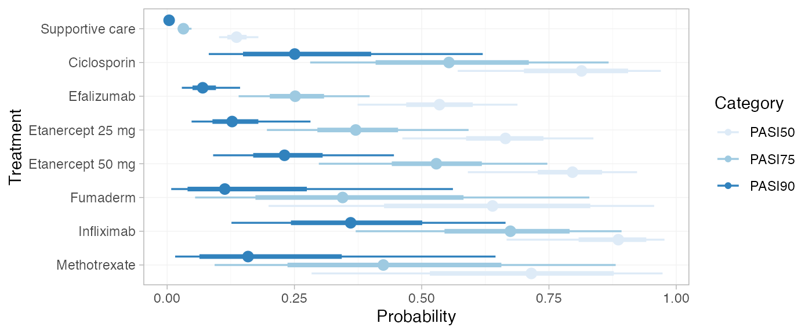
If the baseline argument is omitted, predicted
probabilities will be produced for every study in the network based on
their estimated baseline probit probability
.
Ranks and rank probabilities
Treatment rankings, rank probabilities, and cumulative rank
probabilities can also be produced. We set
lower_better = FALSE since higher outcome categories are
better (the outcomes are positive).
(pso_ranks <- posterior_ranks(pso_fit_RE, lower_better = FALSE))
#> mean sd 2.5% 25% 50% 75% 97.5% Bulk_ESS Tail_ESS Rhat
#> rank[Supportive care] 7.99 0.12 8 8 8 8 8 5133 NA 1
#> rank[Ciclosporin] 2.76 1.26 1 2 3 4 5 6535 6914 1
#> rank[Efalizumab] 6.35 0.80 4 6 7 7 7 5853 NA 1
#> rank[Etanercept 25 mg] 4.91 1.08 3 4 5 6 7 6411 4916 1
#> rank[Etanercept 50 mg] 3.03 1.20 1 2 3 4 5 5547 5831 1
#> rank[Fumaderm] 4.90 1.96 1 3 5 7 7 7797 5347 1
#> rank[Infliximab] 1.80 1.18 1 1 1 2 5 4057 4624 1
#> rank[Methotrexate] 4.26 1.87 1 3 4 6 7 5791 6025 1
plot(pso_ranks)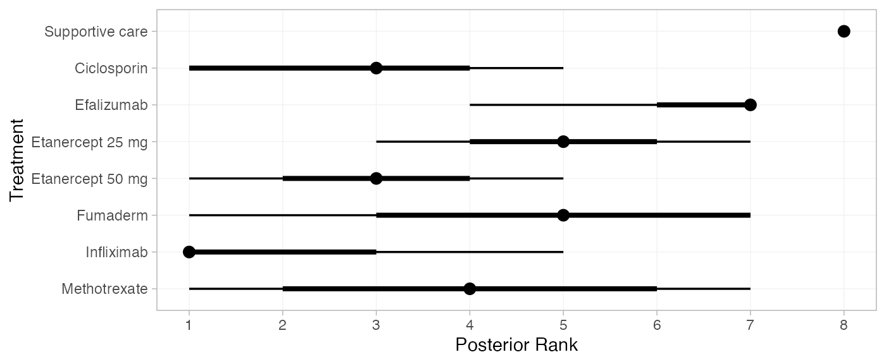
(pso_rankprobs <- posterior_rank_probs(pso_fit_RE, lower_better = FALSE))
#> p_rank[1] p_rank[2] p_rank[3] p_rank[4] p_rank[5] p_rank[6] p_rank[7]
#> d[Supportive care] 0.00 0.00 0.00 0.00 0.00 0.00 0.01
#> d[Ciclosporin] 0.17 0.29 0.27 0.17 0.08 0.02 0.00
#> d[Efalizumab] 0.00 0.00 0.00 0.02 0.10 0.36 0.51
#> d[Etanercept 25 mg] 0.00 0.01 0.08 0.21 0.38 0.26 0.04
#> d[Etanercept 50 mg] 0.08 0.30 0.27 0.24 0.09 0.02 0.00
#> d[Fumaderm] 0.07 0.09 0.10 0.11 0.16 0.19 0.27
#> d[Infliximab] 0.58 0.19 0.13 0.06 0.03 0.01 0.00
#> d[Methotrexate] 0.09 0.12 0.14 0.18 0.17 0.14 0.15
#> p_rank[8]
#> d[Supportive care] 0.99
#> d[Ciclosporin] 0.00
#> d[Efalizumab] 0.00
#> d[Etanercept 25 mg] 0.00
#> d[Etanercept 50 mg] 0.00
#> d[Fumaderm] 0.01
#> d[Infliximab] 0.00
#> d[Methotrexate] 0.00
plot(pso_rankprobs)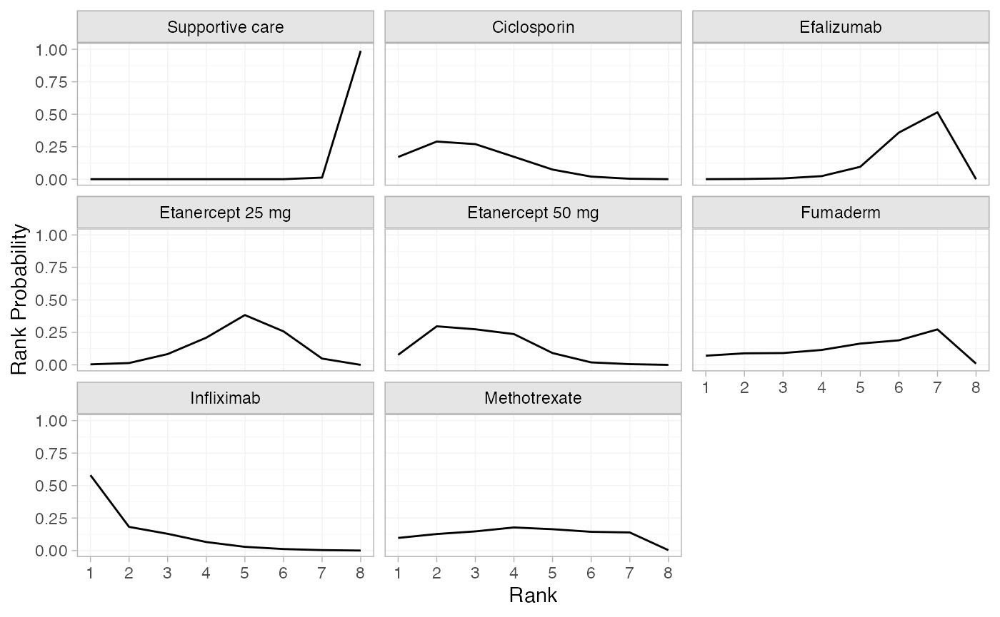
(pso_cumrankprobs <- posterior_rank_probs(pso_fit_RE, lower_better = FALSE, cumulative = TRUE))
#> p_rank[1] p_rank[2] p_rank[3] p_rank[4] p_rank[5] p_rank[6] p_rank[7]
#> d[Supportive care] 0.00 0.00 0.00 0.00 0.00 0.00 0.01
#> d[Ciclosporin] 0.17 0.46 0.73 0.90 0.98 1.00 1.00
#> d[Efalizumab] 0.00 0.00 0.01 0.03 0.13 0.49 1.00
#> d[Etanercept 25 mg] 0.00 0.02 0.10 0.32 0.69 0.95 1.00
#> d[Etanercept 50 mg] 0.08 0.38 0.65 0.89 0.98 1.00 1.00
#> d[Fumaderm] 0.07 0.16 0.26 0.37 0.53 0.71 0.99
#> d[Infliximab] 0.58 0.77 0.90 0.96 0.99 1.00 1.00
#> d[Methotrexate] 0.09 0.21 0.35 0.53 0.71 0.85 1.00
#> p_rank[8]
#> d[Supportive care] 1
#> d[Ciclosporin] 1
#> d[Efalizumab] 1
#> d[Etanercept 25 mg] 1
#> d[Etanercept 50 mg] 1
#> d[Fumaderm] 1
#> d[Infliximab] 1
#> d[Methotrexate] 1
plot(pso_cumrankprobs)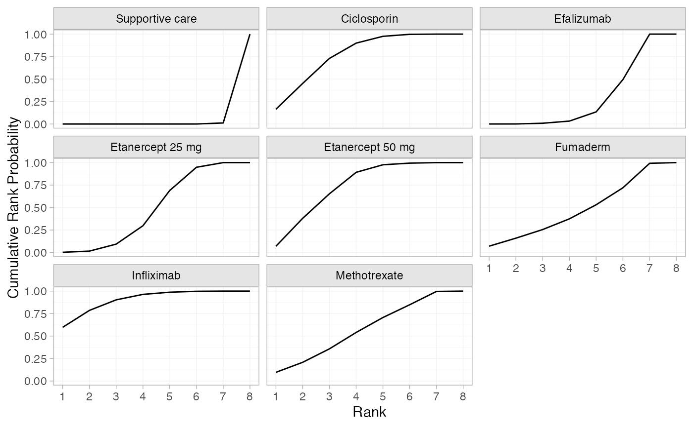